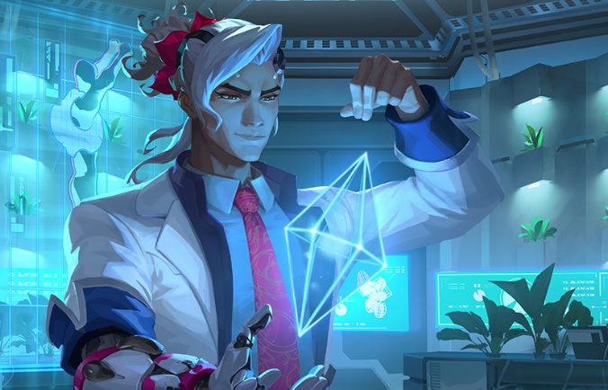

Lifeweaver hizo su debut la semana pasada y causó bastante revuelo. Se habló mucho sobre sus habilidades, su trasfondo y, seamos honestos, su... atractivo.
Actualmente, Lifeweaver se está desempeñando en más de una variante de Partida rápida mientras los jugadores aprenden más sobre el nuevo héroe. Notamos que la tasa de victorias de Lifeweaver ascendió más rápido que la de otros héroes tras su lanzamiento, quizás debido al sorprendente dato respecto a que dicha tasa es mucho más alta en jugadores de niveles bajos que en aquellos de niveles altos. Lifeweaver es un héroe complejo con un conjunto de habilidades increíble que puede repercutir enormemente en una partida. No obstante, estos factores podrían hacer que sea más difícil balancear a un héroe al inicio. ¿Podría haber aspectos de sus habilidades, como la sanación lenta mientras se carga, que castiguen a los jugadores de niveles altos? ¿Podría tener la puntería automática en su sanación un beneficio mucho mayor para los jugadores de niveles bajos?
Cuando empezamos a trabajar en Lifeweaver, la idea fue crear a un héroe de apoyo que pasara la mayor parte de su tiempo sanando, necesitara poca puntería para sanar y llevara habilidades transformativas al campo de batalla. Tomemos, por ejemplo, el cambio de arma. En las primeras fases del desarrollo, su arma era mucho menos efectiva de lo que es actualmente, pero tras varias modificaciones con el paso del tiempo, terminamos llegando a la Descarga de espinas que ven hoy. Aprendimos a jugar como Lifeweaver en un estado determinado y, a medida que sus habilidades evolucionaban, dejamos de lado la también necesaria evolución de su esquema de controles.
Lifeweaver nos dio mucho en qué pensar con respecto al desarrollo de héroes. En concreto, la complejidad de los héroes, la cantidad de habilidades nuevas y únicas y el balance de los héroes al inicio. Lifeweaver tiene algunas habilidades sin un precedente en Overwatch, y cuando se combinan con el esfuerzo adicional del cambio de arma, esto puede llegar a ser un poco abrumador. Creemos que optimizar las habilidades mediante la modificación del cambio de arma y eliminar Regalo de despedida, junto con un esquema de controles más fluido, harán que sea un poco más fácil elegir y comprender a Lifeweaver, así como elevarlo a una posición mucho mejor.
La cantidad de habilidades únicas y de alto impacto en Lifeweaver pueden ser vistas como una pequeña desviación del diseño de héroes de Overwatch. En el pasado, podríamos haber repartido estas habilidades entre más de un héroe. Así fue como creamos a Genji y a Hanzo. Sin embargo, queda mucho por analizar. Además, el proceso de aprendizaje respecto a cómo se juega con él es divertido por sí solo. Hay una gran variedad de posibilidades sobre lo que podría hacer en una partida. Esta moneda tiene dos caras, y los jugadores se ven muy emocionados con sus habilidades. Si bien no todos los héroes de Overwatch serán así de complejos, creemos que hay espacio para crear más héroes como Lifeweaver en el futuro.
Respecto al nuevo balance de héroes, no es que estemos cambiando nuestra filosofía; más bien creemos que tanto Lifeweaver como Ramattra no tuvieron el impacto que nos hubiera gustado. Reconocemos que la tasa de victorias de un héroe ascenderá tras su lanzamiento, pero también queremos que esos mismos héroes causen emoción en los jugadores desde el día uno. Nuestro objetivo es que los nuevos héroes se sientan balanceados desde el lanzamiento: no muy poderosos, pero sin duda tampoco muy débiles. Y si no se obtiene lo deseado, realizaremos ajustes con base en sus comentarios y los datos que veamos.
PAGINA DE INICIO
TALANTIS EL MAPA DE LA COMUNIDAD